Pi Business Ads lets a shop owner try AI ad creation without a designer or a brief. Seven answers in a chat produce a Facebook ad preview, sent to them on WhatsApp. I designed the flow from the landing page to the delivery states.
Pi Business Ads, an AI ad creator for small businesses
Platform
Web. Designed at 1210 × 834, with the on-screen keyboard state
Scope
Landing page to ad delivery, including waiting, success and error states
Status
Working as a guest demo. Send Message delivers the ad to the WhatsApp number the owner entered
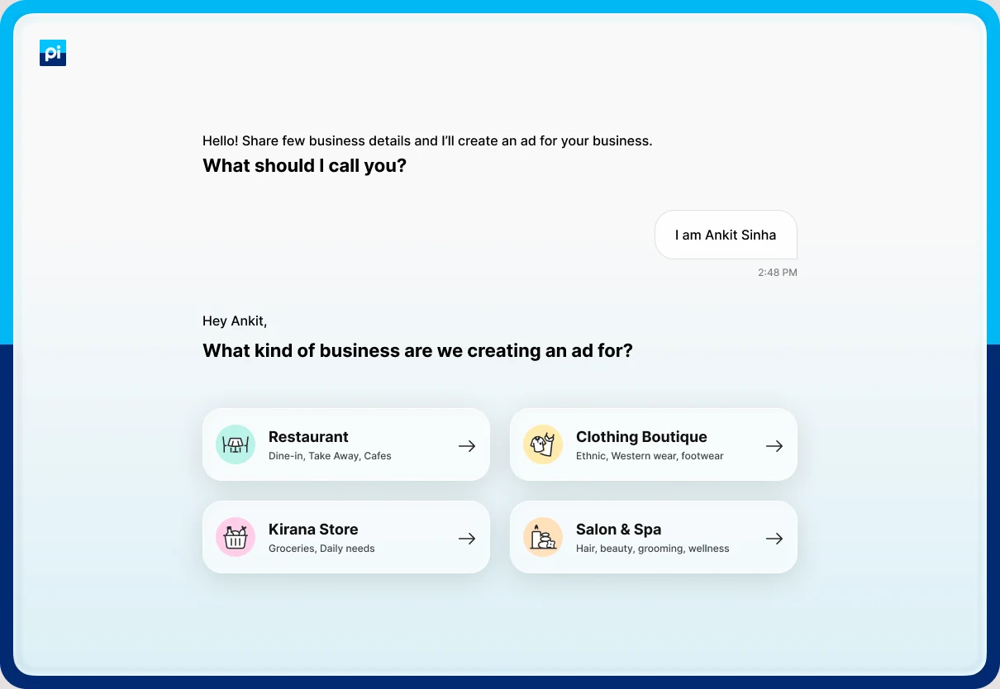
In short
The problem
Most small businesses in India do not advertise digitally. In one survey of 3,249 MSMEs, only 13% used digital marketing.1 A report cited by WION says over 70% of SMBs find the range of ad options overwhelming.2
The solution
A chat of seven questions. Three answers are taps and four are typed. Pi works out the reason to run the ad from the answers, shows what it will use, then returns the ad as a Facebook post and sends it on WhatsApp.
My role
I owned the conversation flow, the screens and the states for waiting, success and failure.
Design brief
A business owner with no design skill should be able to see what an AI-made ad for their shop looks like, in about a minute. The same visit gives the company a lead. Pi Business Ads is built as a guest demo: no sign-up, one chat, one result.
Objective
Design a chat that collects exactly what the ad needs, shows the owner what it will use, and delivers a finished ad in a place the owner already works.
Users
Owners of small businesses in four categories: restaurants, clothing boutiques, salons and spas, and kirana stores
The company running the demo, which needs a lead and safe ads
Constraints
The chat is freeform, but the system still needs seven fields before it can generate
Business type, city and colour must land on a valid option, because each maps to a rule set, a substitution or a colour code
Image models often garble digits, so the phone number is handled character by character
Ads must follow a compliance rule set for the business category
No logo upload, product photos or offer field in this version, and the chat is in English
Success measures
Share of owners who finish the seven answers, share who see an ad, share who receive it on WhatsApp, and leads captured.
Problem statement
A shop owner who has never made an ad faces two blank pages: a tool with many options, and a brief they do not know how to write. They need an ad that looks professional and carries their shop’s name, without learning the vocabulary of advertising.
How might we…
ask only what the AI cannot work out for itself?
turn a short chat into the detail an ad needs?
show the owner what the ad will be built from before it is made?
deliver the ad where the owner already works?
What the research says
I combined published surveys on small businesses in India with research on chat interfaces and a look at existing AI ad tools. This is secondary research. Where a figure comes from a company or an unnamed report, I say so, and where two figures disagree, I say that too.
Small businesses and advertising
13%
Share of MSMEs that currently use digital marketing.
Google and India SME Forum survey of 3,249 MSMEs, June 2026. 72% were micro enterprises1
70%+
Share of SMBs who say the variety of ad options is overwhelming.
A report cited by WION. The article names no publisher or sample2
92%
Share of businesses on Meta platforms in India that are MSMEs.
TechCrunch reported in 2024 that India has more than 65 million small and medium businesses, and about 5 million of them sell online.3 The 13% survey and the WION report’s claim that nearly 80% of SMBs use AI ad tools do not agree. The survey names its sample and leans towards micro firms in smaller cities. The other source names neither. I rely on the survey.
Who the shops are
91%
Kirana stores’ share of the grocery market in 2025, projected to be about 86% by 2030.
Options a chat can list before choosing becomes unworkable, in one team’s view. They also note about 2 to 3 seconds of delay per AI reply.
UX Planet, SAP Emarsys authors, from their own testing9
What I took from it
Too many choices is the problem
If over 70% of SMBs find ad options overwhelming, the first screen should not show any. The flow asks one question at a time and shows no ad option until the result.
Meet owners where they work
Most businesses on Meta platforms in India are MSMEs, so the ad appears as a Facebook post. WhatsApp carries it back to the owner, because it is the channel they already use with customers.
Chat is liked, and slower
People preferred the chatbot but took longer with it. So the chat stays at seven questions, and three of them are taps.
Closed answers where the system needs them
Business type, city and colour each set a rule set, a line of ad copy or a colour code. They are cards and swatches, not free text, so the answer always lands on something valid.
English only leaves people out
With 98% of internet users reading Indic languages, an English-only chat is a real gap. I list it in the review. The ad prompt already supports Hindi and Hinglish.
AI ad tools I looked at
These descriptions come from vendor help pages and press coverage. I did not test the tools, and Meta’s features were described in 2024 and may have changed.
Each of the other three assumes something a first-time owner may not have: an existing ad, a website, or a prompt worth writing. That is my reading of the pages above.
Design checked against published findings
One article lists specific ways a chat falls short of a form. It is the authors’ own view from their testing, with no sample sizes, so I used it as a review checklist and not as proof.9
Published point
What this flow does
Chat hides progress, so users cannot see how much is left
Not addressed yet. Nothing shows how far along the owner is. See the review
Chat is hard to review, because key inputs scroll out of view
A summary card lists every answer before the ad is made
Option lists get unworkable above three to five items
Every closed question offers four options
Each AI reply adds a delay, and users need to see system status
“Getting things ready for you…” with the input disabled, then a skeleton of the post while the ad is made
Recognition beats recall
Cards carry icons and examples, and the description field has an example and a suggestion button
Who it is for
These three segments are hypotheses built from the product spec and the research above. I would confirm them in interviews.
Shop owner, first ad
Wants
An ad that looks professional today, without learning how ads work.
Worries about
Jargon, cost, and getting something wrong.
The flow gives them
Plain questions, taps for the closed answers, and a preview of the finished ad.
Owner who cares how it looks
Wants
An ad that feels like their salon or boutique, not a template.
Worries about
A generic result from a one-line description.
The flow gives them
A colour chosen for the trade, and a description that shapes the photograph and the copy.
The company running the demo
Wants
A lead for each completed try, and ads it can stand behind.
Worries about
Claims that break category rules, and a phone number printed wrongly.
The flow gives it
A business type that selects the rule set, a lead record, and digits handled character by character.
Information architecture
I organised the chat by what the owner has to tell Pi. Each answer exists because something later needs it, and a few things the ad needs are worked out instead of asked.
Owner taps Let’s get started
Introduce
NameFree text, used once in the chat
The business
Business typeFour cards with examples
Business nameFree text
CityFour cards with the state
The look
DescriptionFree text, with a suggestion
Theme colourFour swatches for the trade
Contact
Mobile numberTen digits
SummaryEverything Pi will use
Result
WaitingSkeleton of the post
Facebook ad preview
WhatsApp deliverySend again, or create a new ad
Worked out, never asked: the compliance rule set from the business type, the reason to run the ad and who to aim it at from type and city, and the mood of the photograph from the chosen colour.
Where each answer goes
From the product’s field spec, which lists what each answer feeds.13
Answer
How it is asked
What it feeds
Name
Free text. “What should I call you?”
The chat, which uses the first name once, and the lead record
Business type
Four cards, each with examples
The compliance rule set, the brand type line, the colours offered, and the reason to run the ad
Business name
Free text. “I’ll use this as the brand name on your ad.”
The logo plate, the ad copy, and the page name in the feed preview
City
Four cards, each with its state
The contact bar, the ad copy, and the targeting line
Description
Free text, with an example and a suggestion button
The ad copy and the scene in the photograph. The biggest lever on quality
Theme colour
Four swatches named for the trade
The colour of the contact bar and headline accent, and a mood phrase that steers the photograph
Mobile number
Free text, ten digits
The contact bar on the ad, the lead record, and where the ad is sent on WhatsApp
What the flow leaves out on purpose
There is no offer or discount question, no logo or product photo upload, no street address, and no language choice. The spec cut the offer to keep the chat short, and notes that the offer badge is the loudest element on a poster, so it may be worth adding back.13 I list it in the review.
Design principles
Ask only what the AI cannot know
Work out the rest from type, city and colour.
Closed answers where the system needs a valid option
Cards and swatches, never free text for type, city or colour.
Say why you are asking
Each question carries one line on how the answer will be used.
Confirm before spending the minute
Show every answer, then make the ad.
Journey map
The map follows a kirana owner through seven steps, from the landing page to the ad on WhatsApp. It is built from the flow and the research, and the feelings are hypotheses to test, not measurements.
Swipe sideways to see all seven steps.
Row
Step 1Arrive
Step 2Introduce
Step 3Describe the business
Step 4Describe the look
Step 5Give a number
Step 6Confirm
Step 7Receive
Goal
See what this is
Get started without effort
Say what kind of shop it is
Make the ad look like my shop
Let customers reach me
Be sure it is right
See my ad and keep it
What they do
Read the promise and tap Let’s get started
Type a name
Tap a type and a city, type the shop’s name
Describe what the shop sells, tap a colour
Type a ten-digit number
Read the summary and tap Create my Ad
Wait, view the preview, tap Send Message
Screens
Landing
Name, working
Type, name, city
Description, keyboard, colour
Number
Summary
Generating, ad ready, sent, failed
How they feel
Solid green line: the ad arrivesDashed red line: delivery fails
Risks
Not believing an AI can make a usable ad
Wondering why a name is needed
A business that fits none of the four types
Not knowing what to write, and giving a vague line
Not knowing what the number will be used for
A wrong answer that cannot be changed
A failed message, with no clear next step
Design response
Four sample ads and one button
One question, and the name used warmly afterwards
Cards with examples, and each question echoing the last answer
An example, a “Suggest me a description” button, and swatches for the trade
A line saying the number goes on the ad so customers can call
A summary of every answer before the ad is made
A skeleton while waiting, then a Send Message button and a retry
How I would measure it
Landing to first answer rate
Drop-off at the name
Drop-off by question, “none of these” reports
Description length, suggestion use
Invalid-number rate, drop-off at the number
Back or edit use, Create my Ad rate
Delivery success, resend and create-new rates
What the owner types, and what they tap
4
Typed answers: name, business name, description and mobile number.
3
Tapped answers: business type, city and colour.
1
Optional shortcut: a suggested description the owner can accept and edit.
The design
The flow in eighteen screens
Every screen in the file, in order. Scroll sideways.
LandingFour sample ads, one promise and one button.
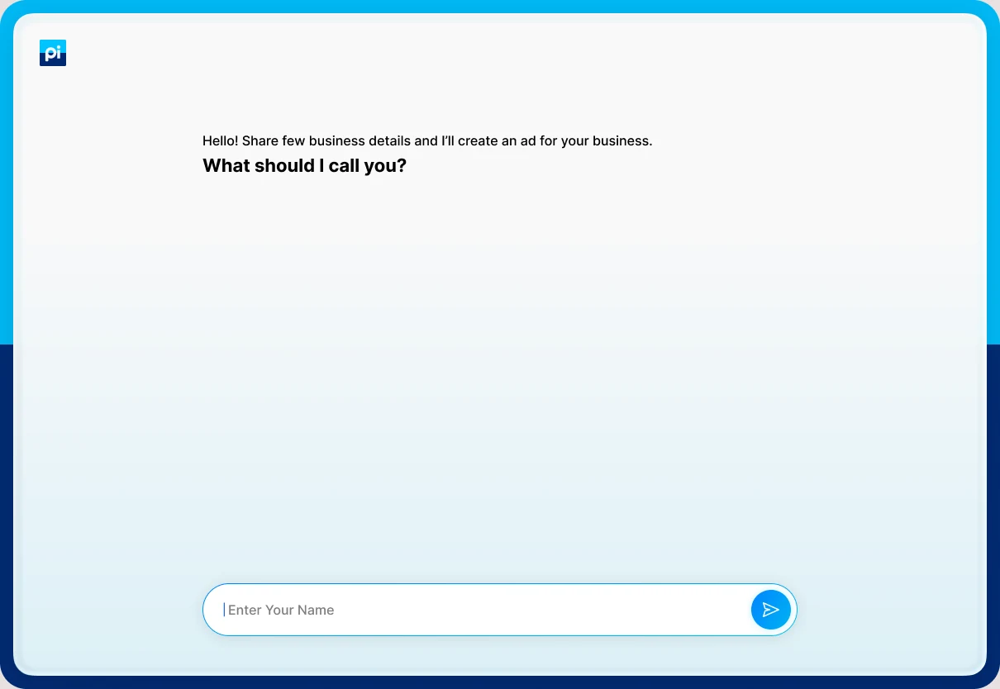
First questionA greeting that says what is coming, then one field.
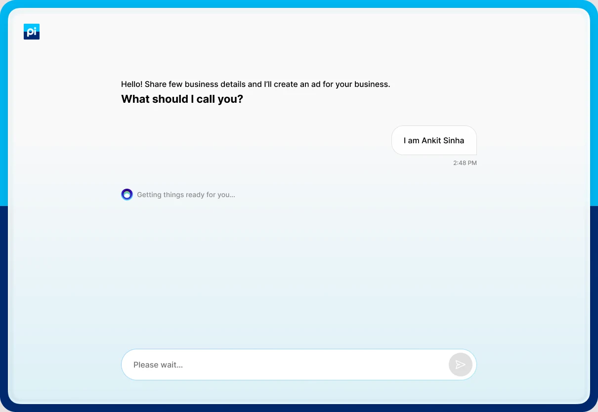
WorkingThe input reads “Please wait…” while Pi gets ready.Business typeFour cards with icons and examples.
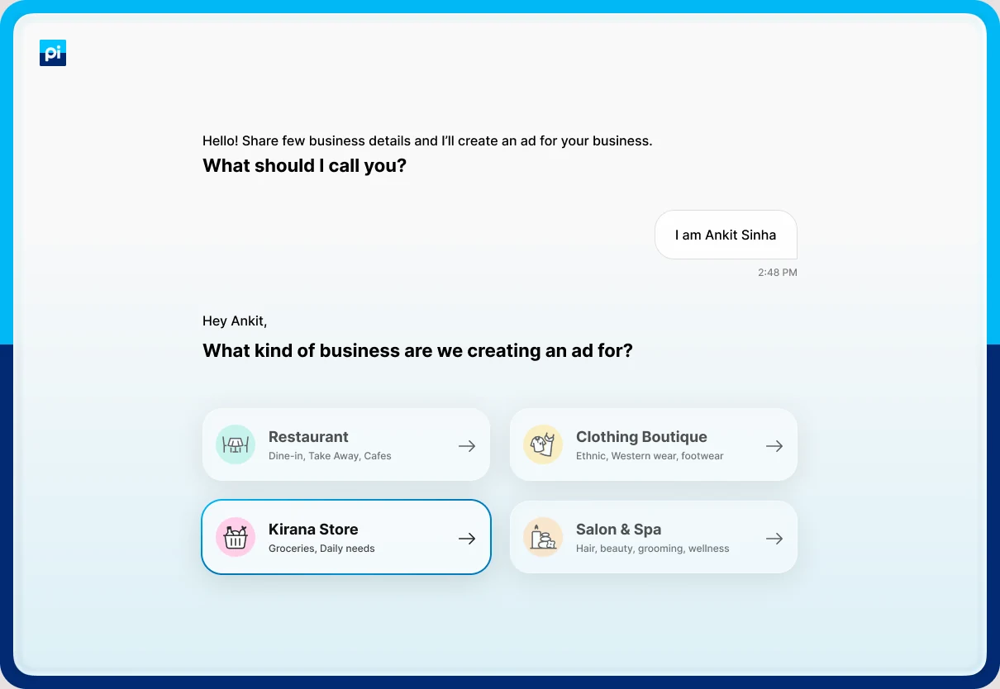
SelectedThe chosen card keeps its outline and the others fade.
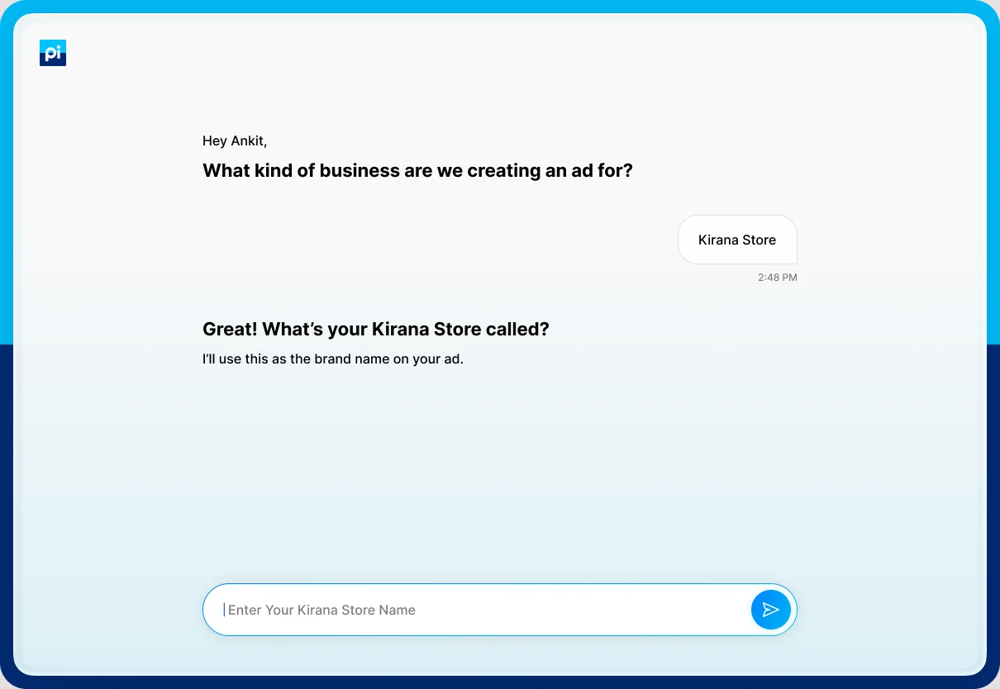
Business name“I’ll use this as the brand name on your ad.”
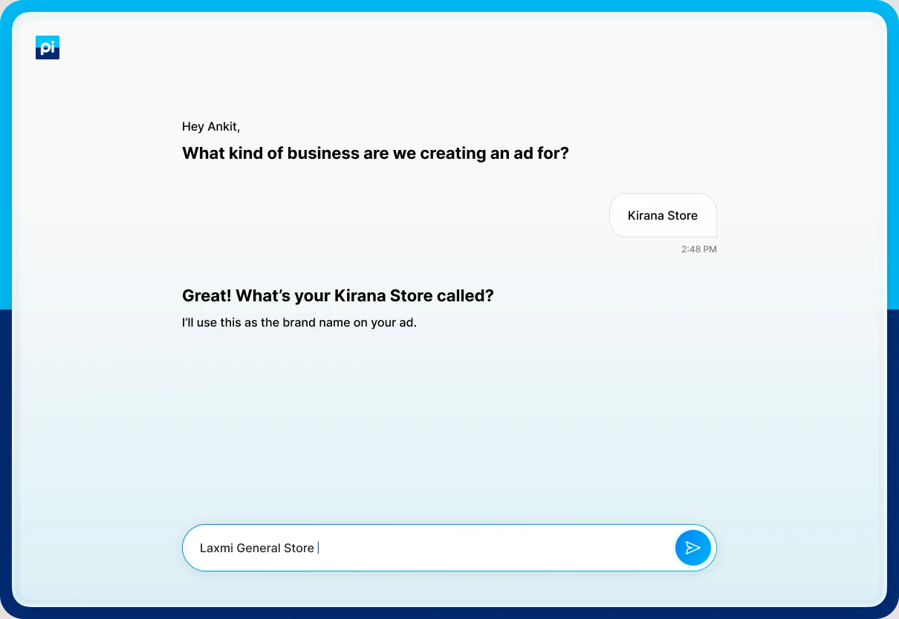
TypingThe name appears in the field before it is sent.
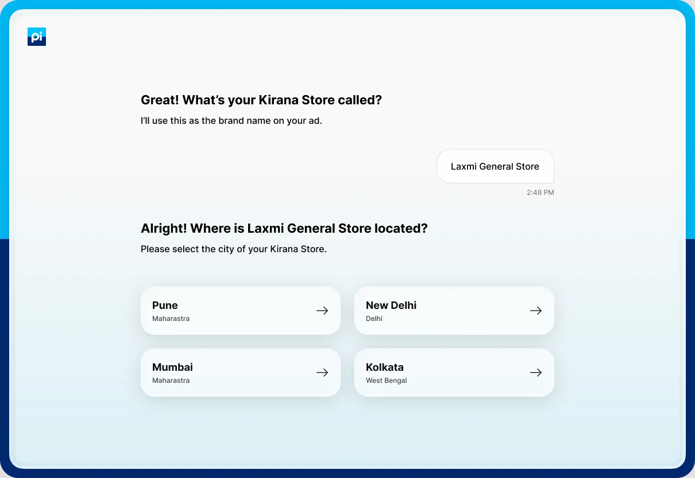
CityFour cities, each with its state.
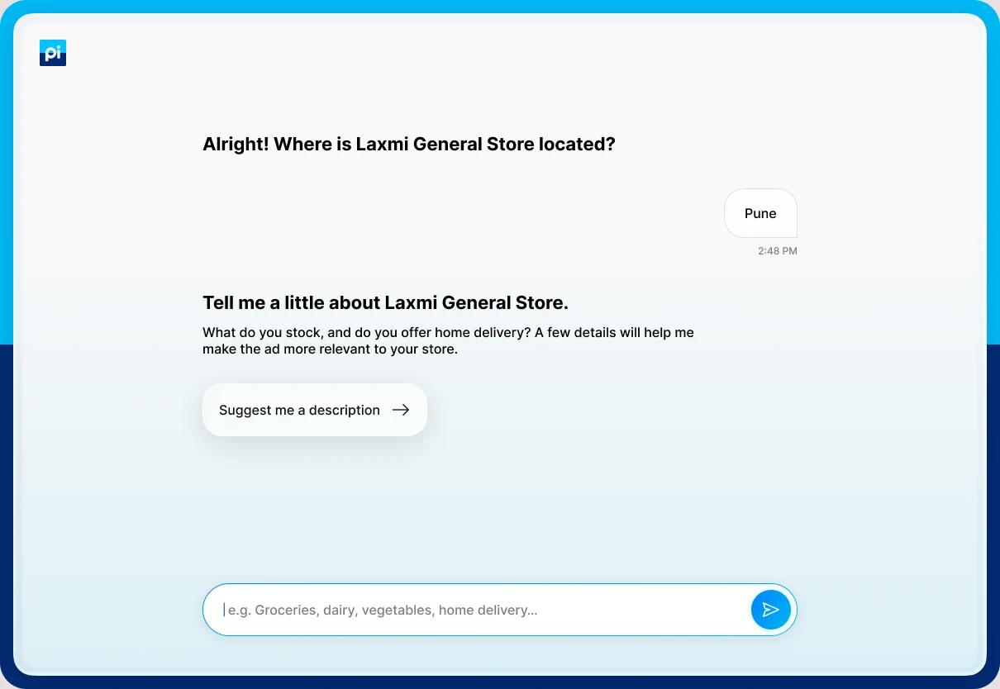
DescriptionA prompt, an example in the field, and a suggestion button.
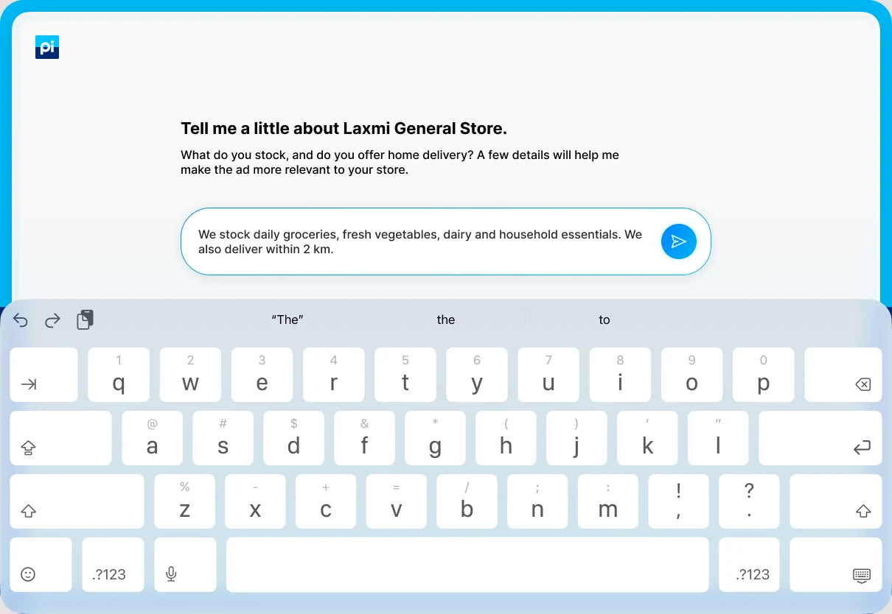
Keyboard openThe field grows to two lines above the keyboard.
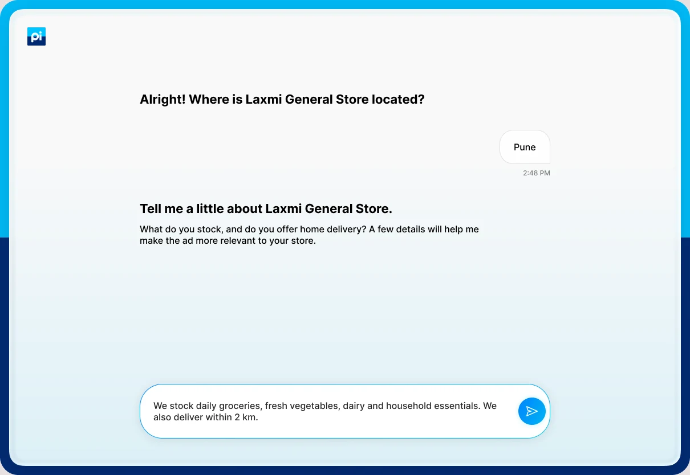
SentThe owner’s words stay on screen as a message.
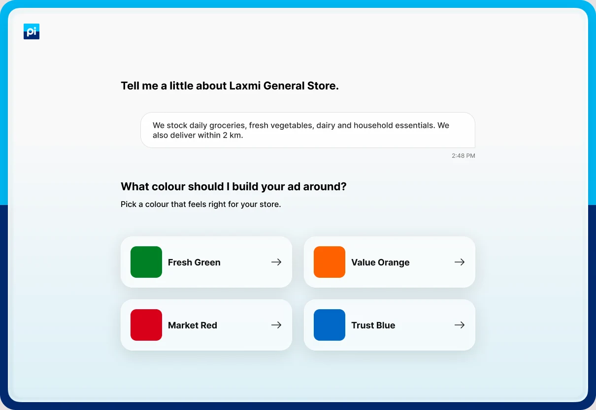
ColourFour swatches named for the trade.
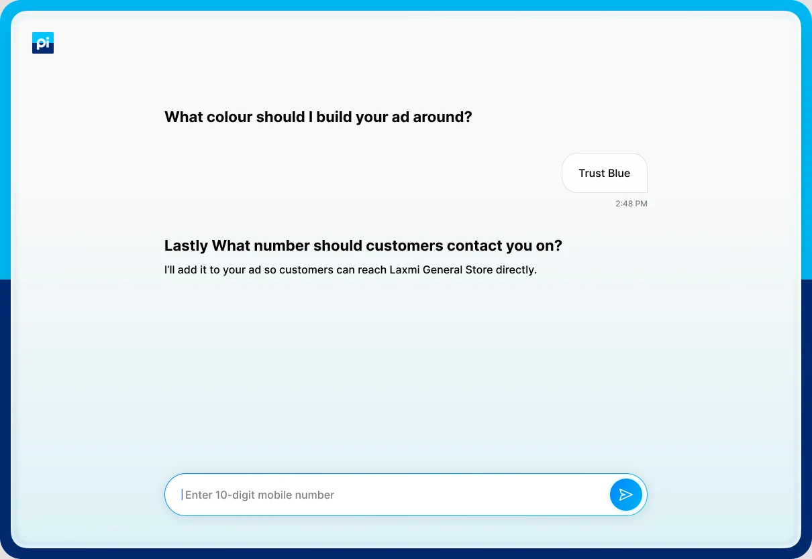
Mobile number“Lastly”, with a line on how the number will be used.
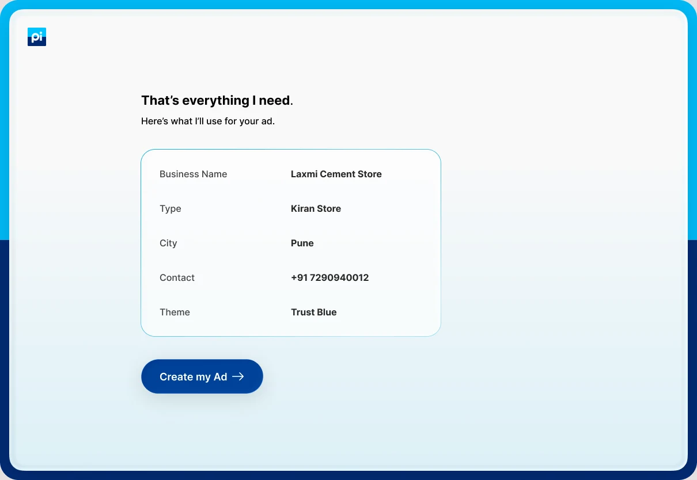
SummaryEverything Pi will use, then Create my Ad.
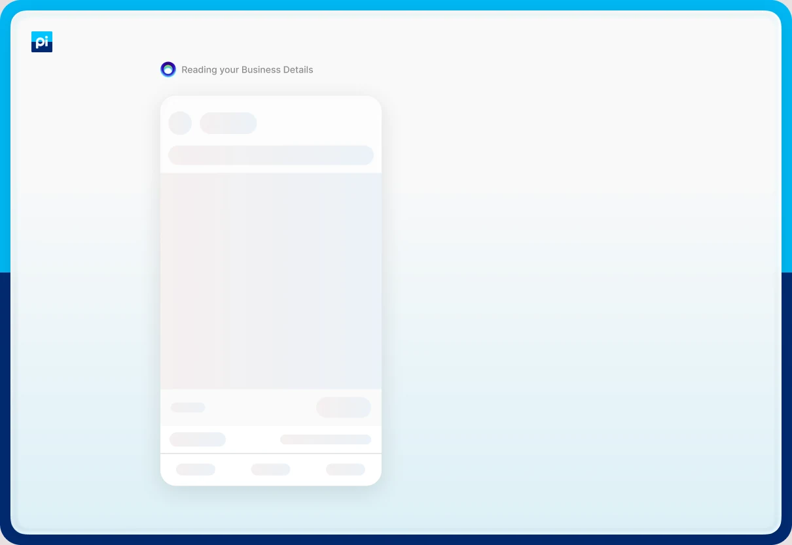
GeneratingA skeleton of the post with “Reading your Business Details”.Ad readyThe ad as a Facebook post, sent on WhatsApp.
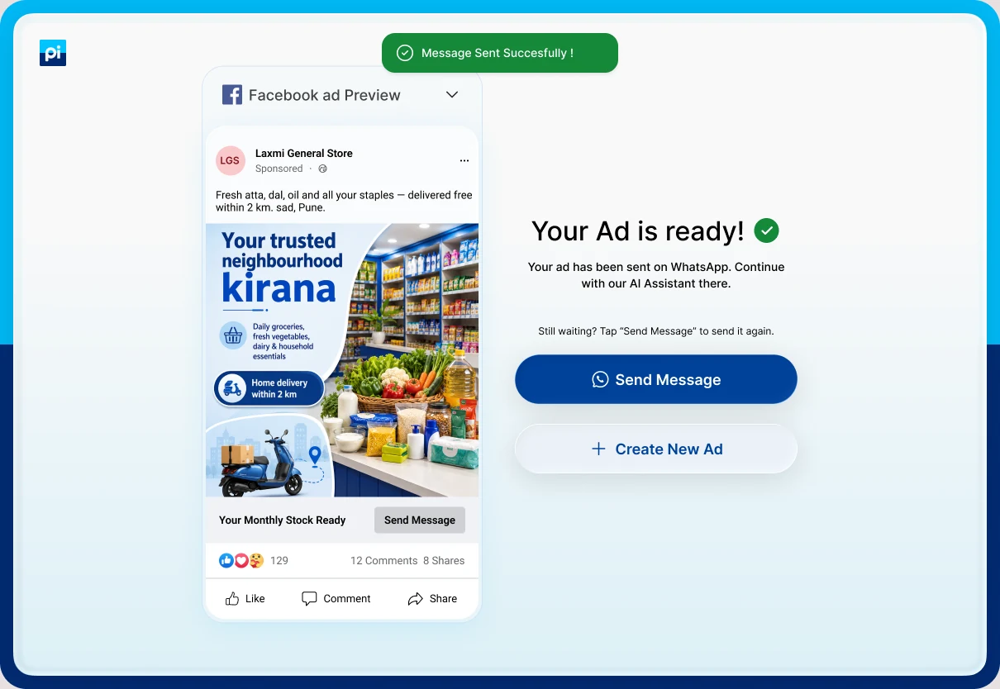
Message sentA green toast confirms the resend.
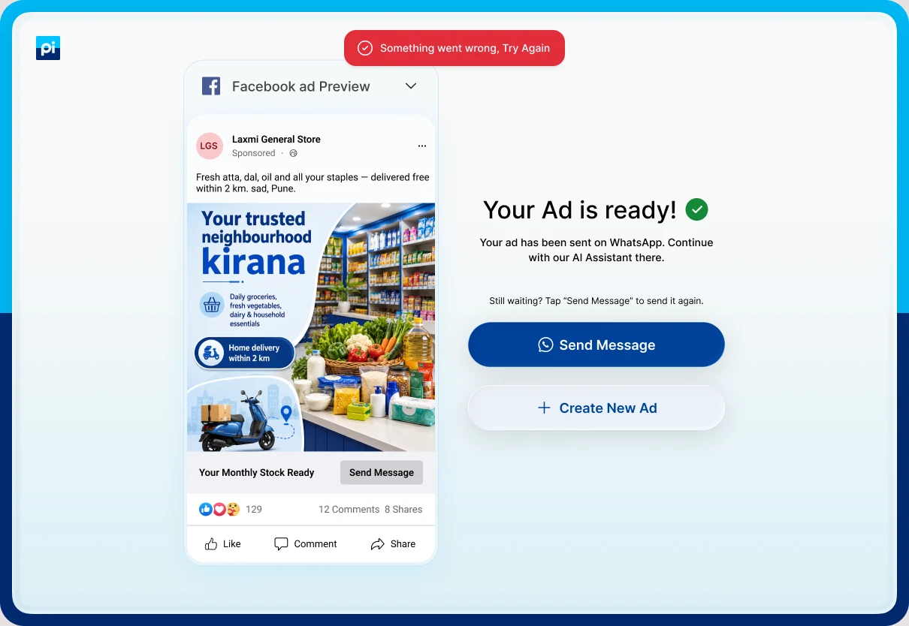
Message failedA red toast asks the owner to try again.
Six decisions
1. Open with the result, not a form
Why. An owner cannot picture an AI-made ad from a description. The landing page shows four sample ads, one for each supported trade, and a WhatsApp badge that hints where the ad will arrive. One button starts the chat. The first question says what is coming: “Share few business details and I’ll create an ad for your business.”
Trade-off. Four samples tell an owner of any other trade that the tool is not for them. See review finding 2.
2. Use cards and swatches where the system needs a valid option
Why. Business type, city and colour each map to a rule set, a line of copy or a colour code, and free text would not resolve. Each card carries examples, such as “Dine-in, Take Away, Cafes”, so a bakery owner can see where they belong. Every closed question has four options, within the range a chat can handle.9 The chosen card keeps its outline and the rest fade.
Trade-off. A business outside the four types has no route, and the spec warns against forcing it into the nearest box.13
3. Reuse the last answer, and say why each one is needed
Why. After the owner picks Kirana Store, the next question reads “What’s your Kirana Store called?” After they type a name, it becomes “Where is Laxmi General Store located?” Each question adds one line on its use, such as “I’ll use this as the brand name on your ad.” The chat feels like it is listening, and each ask is justified.
Trade-off. Echoing the type only works because the type is asked first. The order of questions is part of the design.
4. Help the owner describe the business
Why. The description is the only source of anything specific in the ad, and it shapes the photograph too. The spec’s own example makes the point: “we do haircuts” gives a generic ad, while brands, packages and two senior stylists give a specific one.13 So the question names what to cover, the field shows an example, and a “Suggest me a description” button gives something to accept and edit. The field grows to two lines as the owner types.
Trade-off. An owner who accepts the suggestion unchanged gets a generic ad. The spec says to push for two sentences and ask again if the answer is one line.13
5. Confirm everything before spending the minute
Why. A wrong business type applies the wrong rule set, and the phone number is printed on the ad. The number is asked last, with a line saying it goes on the ad so customers can reach the shop. Then one card lists every answer, with a single Create my Ad button. The summary also answers a known weakness of chat: key inputs scroll out of view.9
Trade-off. The card shows values but no way to change one. See review finding 1.
6. Show the wait, then show the ad where it will be seen
Why. While the ad is made, a skeleton in the shape of a Facebook post stands in for it, with “Reading your Business Details” above. The result appears in that same frame, with the shop’s name, “Sponsored”, the copy, the picture and a button, so the owner judges it the way a customer would. “Your ad has been sent on WhatsApp” tells them where to go next, with Send Message to try again and Create New Ad to start over.
Trade-off. The page promises the ad was sent before the owner knows it arrived.
States in the file, and states still to design
The file covers the happy path well. It shows seven waiting, input and delivery states, and no error for any answer. I list both so the gap is plain.
Shown in the frames
Waiting for a reply, input disabled
Selected and faded cards
Keyboard open, field grown
Generating the ad, skeleton
Message sent, green toast
Message failed, red toast
Send it again, “Still waiting?”
Still to design
Invalid or mistyped mobile number
Description too short
A business outside the four types
The ad fails to generate
Changing an earlier answer
Leaving and coming back mid-chat
What I would improve
Medium
1. Progress is hidden, and earlier answers cannot be changed
Nothing shows how far along the owner is, and each answer leaves the screen as the chat moves on. Add a small “3 of 7” marker, and let the owner tap an earlier answer to edit it. These are two of the published weak points of chat.9 I read this from the frames, so I would confirm it in the build.
Medium
2. Four cities and one language
The frames offer Pune, New Delhi, Mumbai and Kolkata. The spec lists Mumbai, Delhi, Bengaluru and Pune, so the two need aligning. Either way, an owner elsewhere has no route, so add “Other city”. The chat is in English while 98% of internet users read Indic languages.6 The ad prompt already supports Hindi and Hinglish, so generation is ready. The chat and a language choice at the start still need design.13
Measuring it
What to track
Metric
What it tells us
Landing to first answer rate
Whether the promise and the sample ads get owners into the chat
Completion rate
Whether seven questions is short enough to finish
Drop-off by question
Which question costs the most owners, likely the description and the number
Description length, and use of the suggestion
Whether owners write enough for a specific ad, and whether the suggestion replaces their own words
Summary edits and back taps
Whether the summary catches mistakes
Time from Create my Ad to Ad ready
Whether the wait fits the minute the spec expects
WhatsApp delivery and resend rate
Whether the ad reaches the owner
Create New Ad rate
Whether owners want to try another
Leads captured
The commercial output of the demo
Usability tests
Moderated sessions with five to eight owners per trade, on the devices they use. Tasks:
Create an ad for a kirana store, using the suggested description.
Create an ad for a salon, writing your own description.
Recover from a mistyped mobile number.
Change an answer after reaching the summary.
Explain what you expect to happen to your number.
I would record whether each task is finished without help, time on task, what owners expect to receive, and where they hesitate or misread a screen.
Sources
Pages read in October 2026. Company figures and unnamed reports are claims, not independent studies.